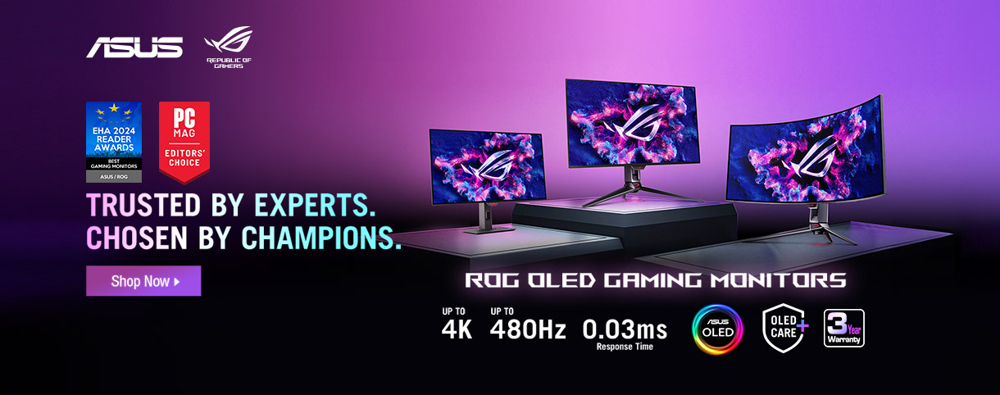
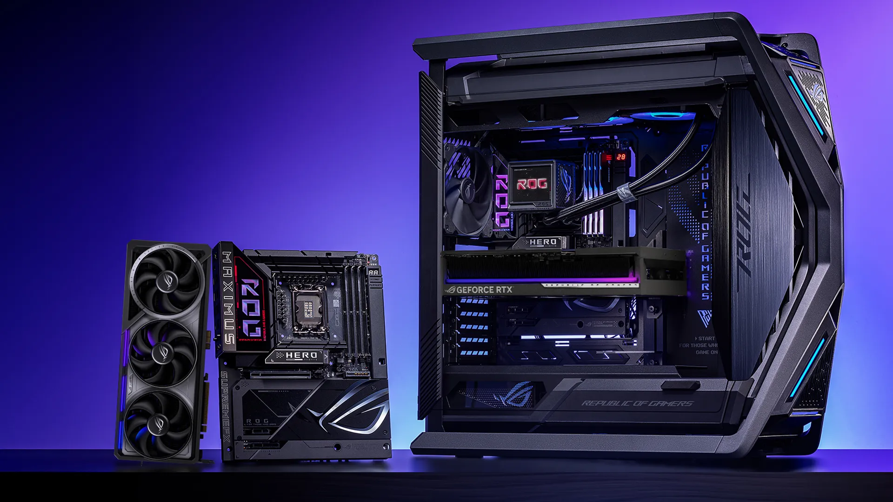

La colaboración entre ASUS y Hatsune Miku ha dado lugar a una serie de productos que combinan el rendimiento de ROG con la icónica paleta azul-verde y rosa de Miku.

El ASUS TUF Gaming A14 2025 combina un potente rendimiento con un diseño portátil, ideal para gamers y profesionales en movimiento.

Con BTF 2.5, no solo puedes disfrutar de una experiencia completa con conectores ocultos, sino también de una mayor flexibilidad y compatibilidad. Las tarjetas gráficas ASUS BTF 2.5 vienen con un adaptador desmontable de alto voltaje para tarjetas gráficas (GC-HPWR), compatible tanto con tarjetas madre estándar como con las tarjetas madre BTF 2.0. Esto eleva el ecosistema BTF de ASUS y permite a los gamers construir PCs más limpias, potentes y verdaderamente de nueva generación.

Celebrando tres décadas de innovación en ASUS, la tarjeta gráfica ROG Matrix GeForce RTX 5090 ofrece un rendimiento de juego y térmico inigualable.
La nueva familia ROG Astral se inspiró en la inmensa extensión y belleza del cosmos, y es un testimonio de una dedicación inagotable a explorar y definir nuevas fronteras. En ese espíritu, la ROG Astral GeForce RTX 5080 presenta la primera tarjeta gráfica de cuatro ventiladores de ROG, junto con una cámara de vapor patentada, mayor densidad de aletas de disipador, una almohadilla térmica de GPU con cambio de fase, velocidades de reloj predeterminadas imponentes, aumento de la entrega de potencia y más.

Powered by ASUS trae para ti a los expertos en integración de hardware para PC de alto rendimiento para entregarte un set up personalizado, con componentes del líder en la industria